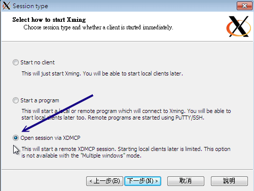
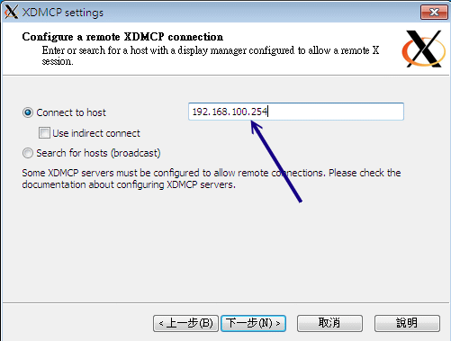
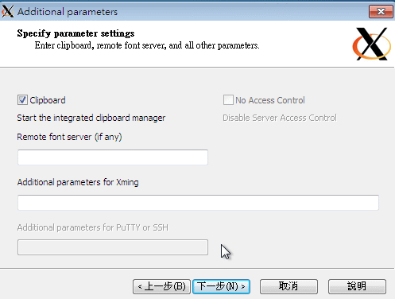
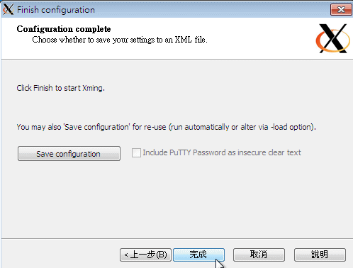

11.3 最原始图形接口： Xdmcp 服务的启用
考虑一个情况，如果你的 Linux 主机主要是用来作为图形处理时，而且同时有多人需要用到那个功能， 那么一部 Linux 是否一次仅能提供一个人处理那个软件呢？嘿嘿！那可不一定喔！因为 Linux 有相当优秀的 X Window System 啊！现在就来谈谈第一个图形接口的远程联机服务器吧！
11.3.1 X Window 的 Server/Client 架构与各组件
由于我们 Linux 使用的图形接口是所谓的 X-Window System 的东西，这玩意儿是能够跨平台的，目前在 Linux 上头开发的图形接口软件，几乎都是使用这个 X 的架构来处理，所以啰，你就不能够不知道 X Window 啦！ 我们在基础篇第三版的二十四章已经讲过 X Window 啦， 因此这里只会作个简单的介绍，以方便大家来了解为何我们的软件是这么安装与设定喔！
X Window System 在运作的过程中，又因控制的数据不同而分为 X Server 与 X Client 两种程序，虽然说是 X Server/Client ， 但是他的作用却与网络主机的 Server/Client 架构大异其趣喔～先来说说 X Server/Client 这两种程序所负责的任务先：
X Server： 这组程序主要负责的是屏幕画面的绘制与显示。 X Server 可以接收来自 X client 的数据，将这些数据绘制呈现为图面在屏幕上。 此外，我们移动鼠标、点击数据、由键盘输入数据等等，也会透过 X Server 来传达到 X Client 端，而由 X Client 来加以运算出应绘制的数据；
X Client： 这组程序主要负责的是数据的运算。 X Client 在接受到 X Server 传来的数据后 (例如移动鼠标、点击 icon 等动作)，会经由本身的运算而得到鼠标应该要如何移动、 点击的结果应该要出现什么样的数据、键盘输入的结果应该要如何呈现等等，然后将这些结果告知 X Server ，让他自行去绘制到屏幕上。
Tips: 鸟哥常常开玩笑的说， X server 就是画布，而 X client 就是手拿画笔的画家。你得要先有画布 (管理好所有可显示的硬件后) 之后画家的想法 (计算出来的绘图数据) 才能够绘制到画布上！

由于每一支 X client 都是独立存在的程序，因此在图形显示会发生一些迭图的问题 (想象一下每一个 X client 都是一个很自我的画家， 每个画家都不承认对方的存在，都自顾自的在画布上面作画，最后的结果会是如何？)。因此，后来就有一组特殊的 X client 在进行管理所有的其他 X client 程序，这个总管的咚咚就是 Window Manager！
- Window Manager (WM)：是一组控制所有 X client 的管理程序，并同时提供例如任务栏、 背景桌面、虚拟桌面、窗口大小、窗口移动与重迭显示等任务。Window manager 主要由一些大型的计划案所开发而来，常见的有 GNOME, KDE, XFCE 等
既然 X Window System 是 Linux 上面的一组程序，那么它如何启动的呢？早期的用户在登入系统后，必须要自己先启动 X server 程序，然后再启动个别的 Window manager ，若有其他需求，再启动其他额外的 X client 就是了。这么麻烦！所以为了简化启动个人图形接口的步骤，后来还有所谓的 Display Manager (DM) 这玩意喔！
- Display Manager (DM)：提供使用者登入的画面以让用户可以藉由图形接口登入。 在使用者登入后，可透过 display manager 的功能去呼叫其他的 Window manager ，让用户在图形接口的登入过程变得更简单。 由于 DM 也是启动一个等待输入账号密码的图形数据，因此 DM 会主动去唤醒一个 X Server 然后在上头加载等待输入的画面就是了。
在目前新释出的 Linux distributions 中，通常启动图形接口让用户登入的方式中，都是先执行 Display Manager 程序， 该程序会主动加载一个 X Server 程序，然后再提供一个等待输入账号密码的接口程序，之后再根据用户的选择去启动所需要的 Window Manager 程序，最后就由用户直接操作 WM 来玩图形接口啰。
例题：在 CentOS 6.x 当中，若预设为 init 5 的情况下，那么最终启动图形接口的是哪一只程序？答：分析 /etc/init/* 当中的档案，会发现有个档案的内容是这样：
[root@www ~]# cat /etc/init/prefdm.conf
start on stopped rc RUNLEVEL=5
stop on starting rc RUNLEVEL=[!5]
console output
respawn
respawn limit 10 120
exec /etc/X11/prefdm -nodaemon
你可以分析 /etc/X11/prefdm 的内容，就能够发现其实该行启动的就是一个 X display manager 程序了喔！
例题：登入 init 5 的 CentOS 6.x 之前，先到 tty1 去查阅一下 X server 是由哪一支程序所唤醒的？答：我们可以透过 pstree 来观察程序间的相关性喔！同时注意，预设的 CentOS 6.x 的 X server 程序名称为 Xorg 的哩。
[root@www ~]# pstree -p
init(1)-+-NetworkManager(1086)
....(中间省略)....
|-gdm-binary(2642)---gdm-simple-slav(2661)-+-Xorg(2663)
| |-gdm-session-wor(2746)
....(后面省略)....
由上述的数据来看，gdm-binary 可以唤醒 Xorg 喔！同理，我们也会知道提供认证的图形画面应该是由 gdm-session 所提供的喔！
- X Window System 用在网络上的方式： XDMCP
当 X server, X client 都在同一部主机上面的时候，你可以很轻松的启动一个完整的 X Window System。 但是如果你想要透过这个机制在网络上面启动 X 呢？此时你得先在客户端启动一个 X server 将图形接口绘图所需要的硬件装置配置好， 并且启动一个 X server 常见的接收埠口 (通常是 port 6000)，然后再由服务器端的 X client 取得绘图数据，再将数据绘制成图啰。 透过这个机制，你可以在任何一部启动 X server 登入服务器喔！而且不管你的操作系统是啥呢！意义就像下图， 如此一来，你就可以取得服务器所提供的图形接口环境啦！
 图 11.3-1、X server/client 的架构
图 11.3-1、X server/client 的架构
但是如果你是使用最笨的方法在客户端自己启动 X server ，然后在告诉服务器将 X client 程序一个一个的加载回来， 那就太累人了吧！我们之前上面不是提到过可以用 display manager 来管理使用者的登入与启动 X 吗？那服务器能不能提供一个类似的服务， 那我们直接透过服务器的 display manager 就能够提供我们登入的认证与加载自己选择的 window manager 的话，这样就太棒了！ 能够达到吗？当然可以啊！那就是透过 Xdmcp (X display manager control protocol) (注3) 啦！
Xdmcp 启动后会在服务器的 udp 177 开始监听，然后当客户端的 X server 联机到服务器的 port 177 之后， 我们的 Xdmcp 就会在客户端的 X server 放上用户输入账密的图形接口程序啰！那你就能透过这个 Xdmcp 去加载服务器所提供的类似 Window Manager 的相关 X client 啰！那你就能够取得图形接口的远程联机服务器哩！赞吧！
那么什么时候会出现多使用者连入服务器取得 X 的情况呢？以鸟哥的例子来说，鸟哥实验室有一组 Linux 在进行数值模拟， 他输出的结果是 NetCDF 档案，我们必须使用 PAVE 这一套软件去处理这些数据。但是我们有两三个人同时都会使用到那个功能， 偏偏 Linux 主机是放在机架柜里面的，要我们挤在那个小小的空间前面『站着』操作计算机，可真是讨人厌啊～ 这个时候，我们就会架设图形接口的远程登录服务器，让我们可以『多人同时以图形接口登入 Linux 主机』来操作我们自己的程序！很棒，不是吗！
11.3.2 设定 gdm 的 XDMCP 服务
既然是所谓的 Xdmcp 协议，那么是否意味着与 X display manager 有关呢？没错啦！ Xdmcp 协议是由 DM 程序所提供的。 我们的 CentOS 预设的 DM 为 GNOME 这个计划所提供的 gdm 哩！因此，你想要启动 Xdmcp 服务，那就得要针对 gdm 这个程序来设定啰。 这个 gdm 的设定数据都放置在 /etc/gdm/ 目录下，而我们所要修改的配置文件其实仅是一个 /etc/gdm/custom.conf (注4) 档案而已。
Tips: X11 提供的 display manager 为 xdm ，而著名的 KDE 与 GNOME 也都有自己的 display manager 管理程序，分别是 kdm 与 gdm 。你可以透过三者中任何一者的 display manager 的配置文件来启动 xdmcp 这个协定呢～
不过，因为我们安装的基准是『Basic server』，所以很多图形接口软件并没有被安装起来。因此，在实作 Xdmcp 之前，我们得先安装图形接口才行喔！使用 yum groupinstall 来安装吧！
# 先检查看看与 X 相关的软件群组有哪些？
[root@www ~]# yum grouplist
Desktop
Desktop Platform
X Window System
# 这三个算是最重要的项目了！得要安装起来才行喔！gdm 是在 Destop 中！
[root@www ~]# yum groupinstall "Desktop" "Desktop Platform" \
> "X Window System"
上面进行完毕后，现在才能开始搞定 custom.conf 啦！来试玩看看！
[root@www ~]# vim /etc/gdm/custom.conf
[security] <==在与资安方面有关的信息，大多指登录相关事宜
AllowRemoteRoot=yes <==xdmcp 预设不许 root 登入，得用这个项目才能以 root 登入
DisallowTCP=false <==这个项目在允许客户端使用 TCP 的方式联机到 xdmcp
[xdmcp] <==就是这个小节的重点之一啰！
Enable=true <==启动 xdmcp 的最重要项目啰！
# 上述特殊字体的部份就是你得要自己新增的内容啰！
[root@www ~]# init 5
# 上述这个指令会切换到 X 图形画面，如果确定要使用 gdm，runlevel 得调整到 5 才好
# 果真如此的话，那就得要调整 /etc/inittab 啰！
[root@www ~]# netstat -tulnp
Active Internet connections (only servers)
Proto Recv-Q Send-Q Local Address Foreign Address State PID/Program name
tcp 0 0 0.0.0.0:6000 0.0.0.0:* LISTEN 4557/Xorg
tcp 0 0 :::6000 :::* LISTEN 4557/Xorg
udp 0 0 0.0.0.0:177 0.0.0.0:* 4536/gdm-binary
# 上述的 port 6000 是由 DisallowTCP=false 项目启动的，port 177 才是我们要的
上述的动作鸟哥是在 runlevel 3 底下启动的，如果你是在 runlevel 5 底下时，因此你也可以利用『 init 3 && init 5 』来重新启动图形接口。但如果你是在 runlevel 3 底下并且不希望变更成为 runlevel 5 呢？那又该如何启动 port 177 啊？如果是这样的话，那么你可以这样启动 xdmcp 啦：
[root@www ~]# init 3
[root@www ~]# runlevel
5 3 <==左边的是前一个 runlevel，右边的是目前的，因此目前是 runlevel 3
[root@www ~]# gdm <==这样就启动 xdmcp 啰！
[root@www ~]# vim /etc/rc.d/rc.local
/usr/sbin/gdm
现在你知道如何在不同的 runlevel 启动 xdmcp 了吧？如果是 runlevel 5 ，因为在 /etc/inittab 就已经有自动启动 gdm 了， 所以你只要顺利启动 runlevel 5 即可。但如果你是在 runlevel 3 的话，因为这样 gdm 就不会被系统的启动流程启动， 那你只好自己在 /etc/rc.d/rc.local 里面指定启动他啰！这样了解呼？不过，既然你都要使用 xdmcp 了，所以建议您直接启动在 runlevel 5 即可！接下来，你得要开放客户端对你的 port 177 联机才行！ 请自行修改你的防火墙规则，开放 udp port 177 吧！鸟哥这里假设你使用鸟哥的防火墙脚本，那你这样作就好了：
[root@www ~]# vim /usr/local/virus/iptables/iptables.rule
iptables -A INPUT -p UDP -i $EXTIF --dport 177 --sport 1024:65534 \
-s 192.168.100.0/24 -j ACCEPT #xdmcp
# 注意喔！特点是使用 UDP 埠口以及加入来源端 IP 网域的控管！
[root@www ~]# /usr/local/virus/iptables/iptables.rule
[root@www ~]# iptables-save | grep 177
-A INPUT -s 192.168.100.0/24 -i eth0 -p udp -m udp --sport 1024:65534 --dport 177 -j ACCEPT
# 确实有开放 port 177 ，而且是 udp 的埠口喔！要注意这两个项目。
11.3.3 用户系统为 Linux 的登入方式
由于 Linux 本身的窗口就是由 X server 提供来的，因此使用 Linux 登入远程的图形服务器是很简单的啦！ 但是因为启动 X 的方式不同而已数种启动方式，底下我们就讲讲两个常见的启动方式：
- 在不同的 X 环境下启动联机： 直接用 X
如果你的客户端已经在 runlevel 5 了，因此其实你已经有一个 X 窗口的环境，这个环境的显示终端机就称为『 :0 』。 在 CentOS 6.x 的环境中，如果原本就是 runlevel 5 的环境，那么这个图形接口的 :0 是在 tty1 终端机啦！如果是由 runlevel 3 启动图形接口，那就是在 tty7 喔！由于已经有一个 X 了，因此你必须要在另外的终端机启动另一个 X 才行！那个新的 X 就称为 :1 接口，其实通常就在 tty7 或 tty8 啦！但因为 X server 要接受 X client 必须要有授权才行， 所以你得先在窗口接口开放接受来自服务器的 X client 数据。
此外，虽然你在客户端是以主动的方式连接到服务器的 udp port 177 ，但是服务器的 X client 却会主动的连接到你客户端的 X server，因此，你必须要开放来自服务器端主动对你的 TCP port 6001 (因为是 :1 界面) 的防火墙联机才行喔！那就来实做看看：
# 1\. 放行 X client 传来的资料：在 X Window 的画面当中启用 shell 输入：
[root@clientlinux ~]# xhost + 192.168.100.254
192.168.100.254 being added to access control list
# 注意！你是客户端！且假设我刚刚那部 Linux 主机的 IP 为 192.168.100.254
# 2\. 开始放行防火墙，因为我们启动 port 6001 ，所以你在客户端这样作：
[root@clientlinux ~]# vim /usr/local/virus/iptables/iptables.allow
iptables -A INPUT -i $EXTIF -s 192.168.100.0/24 -p tcp --dport 6001 -j ACCEPT
[root@clientlinux ~]# /usr/local/virus/iptables/iptables.rule
[root@clientlinux ~]# iptables-save
-A INPUT -s 192.168.100.0/24 -p tcp -m tcp --dport 6001 -j ACCEPT
# 要能看到上面这一行才行呦！
# 3\. 在文字接口 (例如 tty1) 下输入如下的指令：
[root@clientlinux ~]# X -query 192.168.100.254 :1
# 进入 X Window 啰！
如果一切顺利的话，那么你在 clientlinux.centos.vbird 就会看到如下的画面(注意主机名)：
 图 11.3-2、在客户端连上 Xdmcp 成功的画面
图 11.3-2、在客户端连上 Xdmcp 成功的画面
在上图中输入正确的账号与密码之后，你在 tty8 (:1) 就会有个窗口接口啰！那你如果想要回到本机的窗口接口， 就回到 tty7 (:0) 即可切换成功！(在 runlevel 5 时，:0 在 tty1 ，而 :1 在 tty7 喔！)那想要关闭 tty8 该如何是好？你不能够在 tty8 注销啦，因为注销后，系统会重新开一个等待登入的画面，你还是没办法关闭的。你得要回到刚刚启动 X 的 tty1 然后按下 [ctrl]-c 中断联机即可！
- 在同一个 X 底下启动另一个 X： 使用 Xnest
如果常常在 tty7, tty8 切换来去的话，偶而会忘记到底在哪个界面了，尤其是当你的桌面都一模一样时， 那就更难判断了。有没有办法直接在 tty7 启动另一个窗口来加载远程服务器的图形接口呢？可以的，那就透过 Xnest 吧！ 这指令需要在 X 的环境下使用喔！它的简单用法如下：
[root@www ~]# Xnest -query 主机名 -geometry 分辨率 :1
选项与参数：
-query ：后面接 xdmcp 服务器的主机名或 IP 啰
-geometry ：后面接画面的分辨率，例如 1024x768 或 800x600 等之类的分辨率
# 根据上述数据，使用 800x600 连上 192.168.100.254 那部主机：
[root@www ~]# yum install xorg-x11-server-Xnest
[root@www ~]# Xnest -query 192.168.100.254 -geometry 640x480 :1
如果一切顺利的话，那你就会在 tty7 的本机 X 环境下看到如下的画面 (底下的画面是已经登入的情况！)
 图 11.3-3、在客户端的 X 顺利连上 Xdmcp 的画面
图 11.3-3、在客户端的 X 顺利连上 Xdmcp 的画面
一开始的图示会与图 11.3-2 一样，就是出现输入账密的画面，如果输入正确的帐密后， 就会出现上述的图示了。仔细看一下画面当中的终端机标头，你就会发现确实是两部主机的桌面呢！这样有没有更棒棒？ ^_^！ 要关闭这个 X 就简单多了！直接按下关闭，或者是中断那个 Xnest 的程序即可。
11.3.4 用户系统为 Windows 的登入方式： Xming
由于 Windows 本身并没有提供预设的 X server ，因此我们得要自行安装 X server 在 Windows 上面才行。 目前常见的 X server 有底下这几个：
- X-Win32 (http://www.xwin32.tw/)
- Exceed (http://www.hummingbird.com/products/nc/exceed/index.html?cks=y)
- Xming (http://sourceforge.net/projects/xming/)
其中 X-Win32 与 Exceed 都属于商业软件，而 Xming 则属于轻量级的自由软件，说是轻量级并非说它不好， 而是因为 Xming 的档案真的很小，而该有的功能都有了，所以算是很不赖的一个软件喔！因此底下鸟哥是以 Xming (注5) 作范例来介绍的。
安装：你可以使用预设的方法，一直下一步的安装下去，就能够顺利的安装好 Xming 这套 X server 的软件啰。
启动：请在『开始』-->『程序集』-->『Xming』-->『XLaunch』开启设定联机到 xdmcp 的方式。底下我们会使用区网内的广播 (broadcast) 来找到 xdmcp 服务器的方式。启动 XLaunch 之后会出现如下的图示：
 图 11.3-4、Xming 的 Xdmcp 连接方式示意图
图 11.3-4、Xming 的 Xdmcp 连接方式示意图记得上面的图示要选择 One window 或 Fullscreen 或 One window without titlebar 才能够使用 XDMCP 喔！选择完毕后按『下一步』 就会出现如下的画面：
 图 11.3-5、Xming 的 Xdmcp 连接方式示意图
上述的图示当中共有三种传递 X client 的方法，在这个小节当中我们要连到 xdmcp ，所以你得要选择第三个喔！之后再下一步会出现下图：
 图 11.3-6、Xming 的 Xdmcp 连接方式示意图
这里当然就是连接到你想要连上去的 xdmcp 服务器啰！将他的 IP 填上去吧！之后再下一步去：
 图 11.3-7、Xming 的 Xdmcp 连接方式示意图
上图的项目与数据的互相复制贴上有关，保留默认值即可。按下下一步吧！
 图 11.3-8、Xming 的 Xdmcp 连接方式示意图
出现上图就是设定完毕了，给它按下『完成』之后，你就会发现如同图 11.3-2 的画面出现，你就能够开始在 Windows 底下连上图形接口的 Linux Server 啰！很轻松吧！
重点在 Server 与 Client 的防火墙上
其实从上面的设定当中你会发现， XDMCP 不论是在 Server 还是 Client 的设定上面都很简单！但是有时候你就是会发现， 明明所有的动作都做完了，但是就是没有办法连上 Xdmcp 服务器！最容易发生错误的其实就是防火墙啦！因为虽然我们客户端启动 X server 后，会主动联机到服务器端的 Xdmcp (port 177)，但是，接下来却是服务器主动联机到我们客户端的 X server (可能是 port 6000~6010)。 因此，如果你只是设定了服务器的防火墙而已，那么很可能出现问题的应该就是客户端的防火墙忘记打开提供服务器主动联机的规则啰！ 这点是必须要跟大家说明的喔！